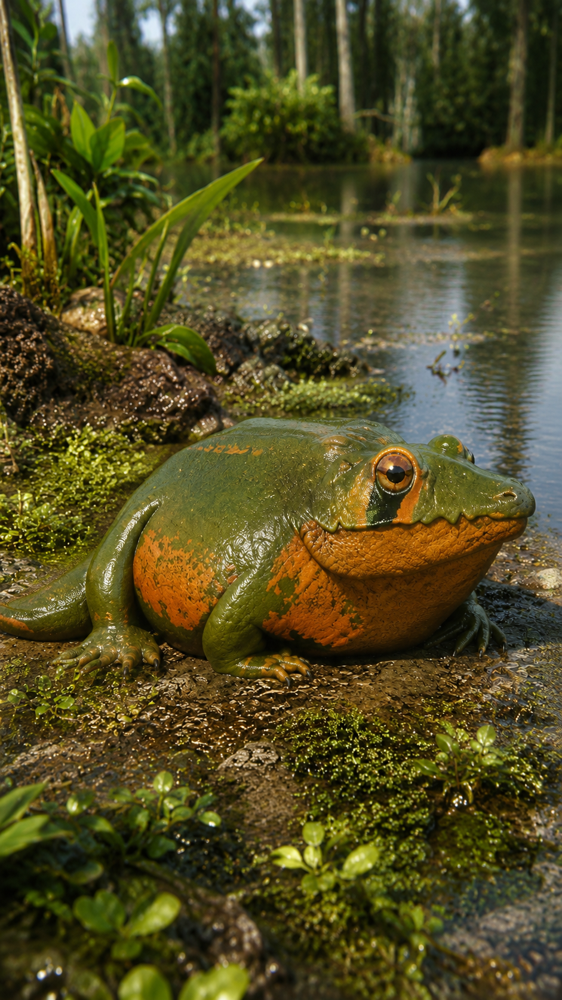
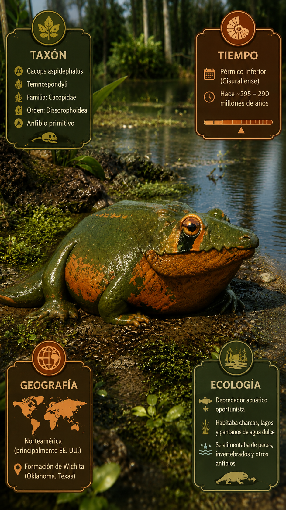
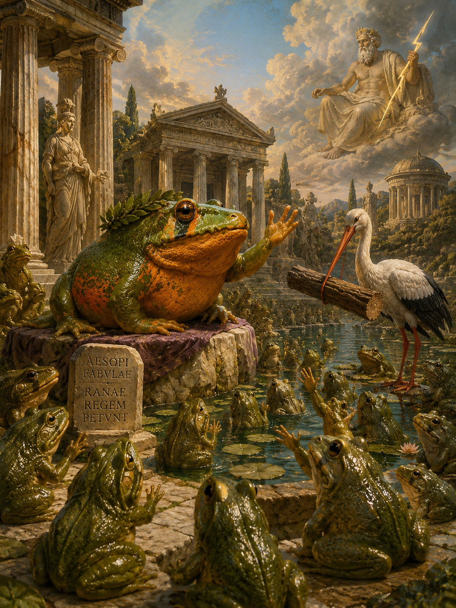
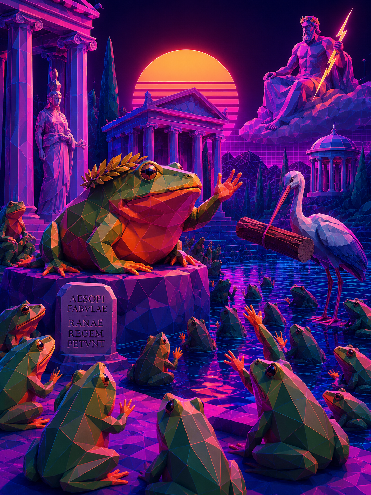

Paleoficha de PalEntropía




TAXÓN: Cacops aspidephorus[span_9](start_span)[span_9](end_span)
CLADO: Temnospondyli (Dissorophoidea, Cacopidae)[span_10](start_span)[span_10](end_span)
DIETA: Carnívoro / Insectívoro-Vertebrívoro (depredador generalista de pequeños tetrápodos, insectos y anfibios basales en el sotobosque)[span_11](start_span)[span_11](end_span)
TAMAÑO: Longitud total estimada de 40 a 50 centímetros y masa corporal aproximada de 2 a 5 kilogramos[span_12](start_span)[span_12](end_span)
LOCOMOCIÓN: Terrestre cuadrúpeda; extremidades cortas pero robustas posicionadas lateralmente con capacidad de desplazamiento ágil en sustratos terrestres húmedos y hojarasca[span_13](start_span)[span_13](end_span)
TIEMPO: Pérmico Inferior (Cisuraliense, aprox. 299-272 Ma)[span_14](start_span)[span_14](end_span)
GEOGRAFÍA: Norteamérica (Estados Unidos, Formación Archer City en Texas y Oklahoma)[span_15](start_span)[span_15](end_span)
EQUIVALENCIA PALEOGEOGRÁFICA: Llanuras aluviales continentales, pantanos boscosos, cuencas fluviales y charcas estacionales[span_16](start_span)[span_16](end_span)
AMBIENTE PALEOECOLÓGICO: Ecosistemas terrestres tropicales y subtropicales de bajío con alta humedad y vegetación densa de ribera.[span_17](start_span)[span_17](end_span)
ECOLOGÍA:
- Flora: Pteridofitas, helechos con semilla (medullosales), equisetos gigantes y cordaítas en zonas de humedal.
- Fauna secundaria: Comunidad de tetrápodos del Pérmico temprano, incluyendo sinápsidos pelicosaurios (Dimetrodon), temnospónfilos acuáticos y reptiles captorhinidos.
- Nichos: Depredador terrestre de estrato bajo. El cráneo es corto, ancho y altamente osificado, con grandes aberturas timpánicas que sugieren una capacidad auditiva aérea desarrollada para la detección de presas ocultas. La característica anatómica más sobresaliente es su armadura dorsal, compuesta por osteodermos dérmicos masivos fusionados rígidamente a las espinas neurales de las vértebras dorsales, formando un caparazón protector rígido que limitaba la flexión lateral del tronco y ofrecía defensa activa frente a depredadores mayores.
- Relaciones: Temnospondyli. Dissorophoide altamente adaptado a la vida terrestre, representando una divergencia morfológica inusual dentro de un grupo mayoritariamente anfibio y acuático.[span_18](start_span)[span_18](end_span)
CLIMA: Wm21-Wm22 (Pérmico temprano cálido, con estacionalidad hídrica marcada por periodos de lluvias monzónicas alternados con desecación parcial).[span_19](start_span)[span_19](end_span)
ESTADO ECOLÓGICO: Extinto. Componente exitoso de las comunidades de microvertebrados terrestres del Paleozoico tardío, especializado en la ocupación de nichos de baja altura con protección dérmica especializada.[span_20](start_span)[span_20](end_span)